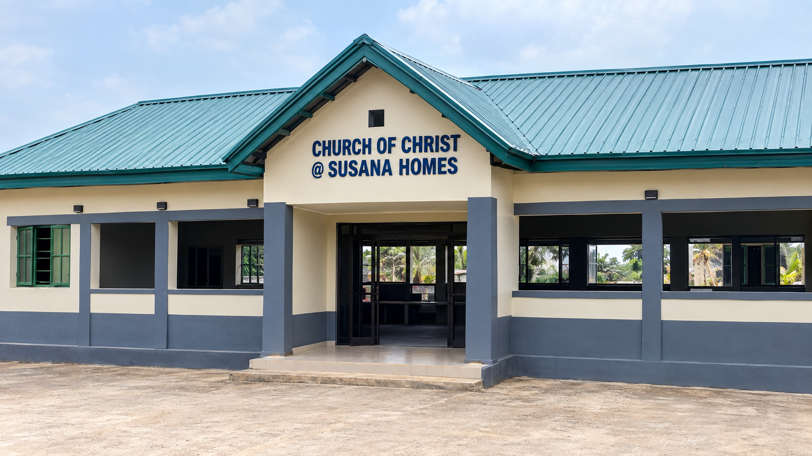
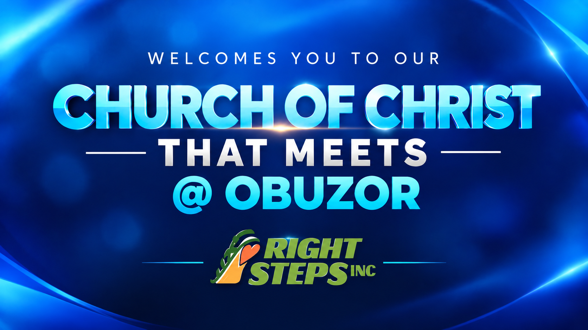
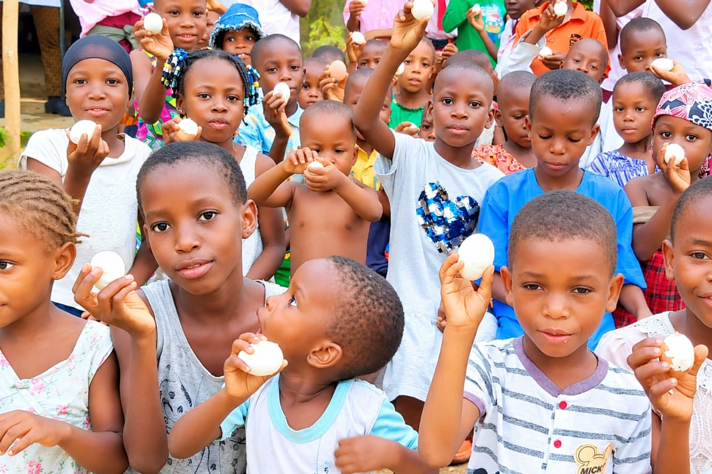
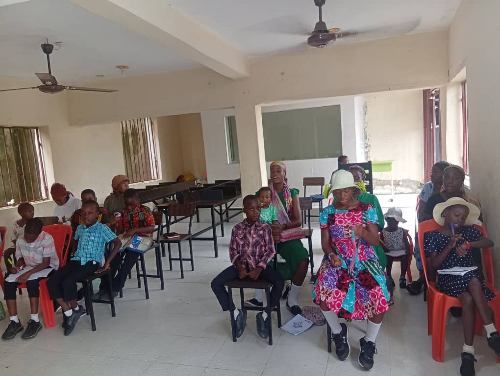
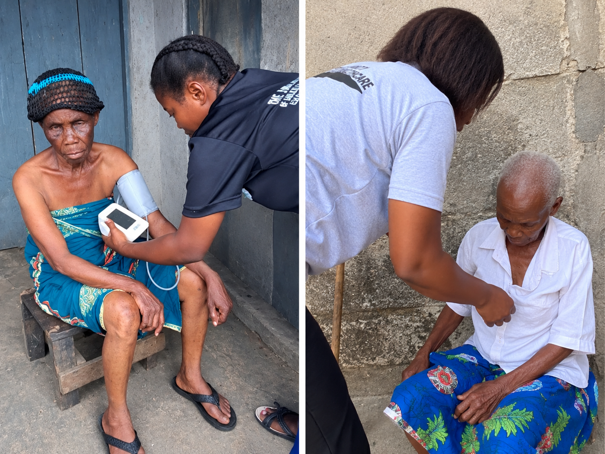

Churches & Ministries
Churches and ministries connected with the wider Right Steps community.
Our Church Communities
This section presents the churches that are part of the wider structure identified by Right Steps Incorporated.

Church of Christ @ Susana Home
The Church of Christ @ Susana Home provides a place where the children at Susana Home Campus One can gather together to worship God, learn His Word, and grow in their faith. The church creates an environment where the children can worship, fellowship, and develop a closer relationship with God while growing together as a community. “Let the little children come to me.” — Matthew 19:14
Contact Us →
Church of Christ Obuzor
The Church of Christ Obuzor provides a place where people in the Obuzor community can gather together to worship God, study His Word, and fellowship with one another. As part of the Right Steps family, the church creates opportunities for children, young people, women, and men to come together in faith, grow spiritually, and strengthen their relationship with God. “As for me and my house, we will serve the Lord.” — Joshua 24:15
Contact Us →
Church of Christ Umahala
The Church of Christ Umahala serves as a place of worship for the people of the Umahala community, providing an opportunity for children, women, men, and young people to gather together in faith and worship God. The church is supported by the Right Steps family and also serves as a way of reaching out to children in the community through acts of care and support, including providing food and vitamins where needed. Through worship, fellowship, and community service, the church seeks to share God's love while creating opportunities for people to grow together in faith. “Let us not love with words or speech but with actions and in truth.” — 1 John 3:18
Contact Us →
Church of Christ Oyigbo
The Church of Christ Oyigbo provides a place where the children of Susana Homes Campus Two can gather together to worship God, learn His Word, and grow in their faith. The church gives the children an opportunity to worship, fellowship, and build their relationship with God in a caring and supportive community. “Train up a child in the way he should go.” — Proverbs 22:6
Contact Us →Faith, Service and Community
The churches provide places where people can gather, worship, learn and serve their communities.
